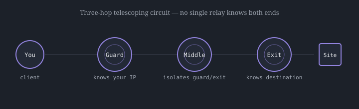

Topic 2
How Tor Works: Circuits & Layered Encryption
Tor keeps its speed while protecting identity by routing traffic through exactly three relays and wrapping the data in layers of encryption, one layer per relay, that peel away like the layers of an onion.
The directory authorities
Unlike peer-to-peer file-sharing networks that use distributed hash tables, Tor relies on a small, semi-centralized directory service to track which relays are active. Nine trusted, geographically separated server clusters, called Directory Authorities, measure the bandwidth, uptime, and stability of every relay each hour and jointly publish a signed document called the network consensus. When your Tor client starts up, it downloads this consensus to build a map of relays it can choose from.
Telescoping circuit construction
Instead of connecting directly to a website, the client builds a path through three randomly selected relays:

| Relay | Role | What it knows |
|---|---|---|
| Guard / entry node | First hop in the circuit | Your real IP address (but not your destination) |
| Middle node | Buffer relay | Neither your IP nor the final destination |
| Exit node | Final hop, strips last encryption layer | Your destination (but not your real IP) |
The ntor handshake
Building the circuit relies on an incremental cryptographic handshake so that no single relay ever learns the whole path. Tor uses the ntor handshake, built on Curve25519 elliptic-curve cryptography. The client first performs an elliptic-curve Diffie-Hellman exchange with the guard node to establish a shared key, then extends the circuit through the guard to negotiate a second, independent key with the middle node, and repeats the process once more to negotiate a third key with the exit node.
Peeling the onion
Data is broken into fixed-size 514-byte units called cells. When you send a request, your Tor client encrypts it three times using AES in counter mode, applying the three relay keys in reverse order - so the ciphertext is the exit key's encryption of the middle key's encryption of the guard key's encryption of the original data. As the cell moves through the circuit, each relay peels off exactly one layer:
- The guard node decrypts the outer layer, learning only where to send it next (the middle node)
- The middle node decrypts the next layer, learning only the exit node's address
- The exit node decrypts the final layer, revealing the actual request and sending it to the destination
Because each relay only holds the keys for its immediate neighbors, no single relay ever knows both where the traffic came from and where it's going.